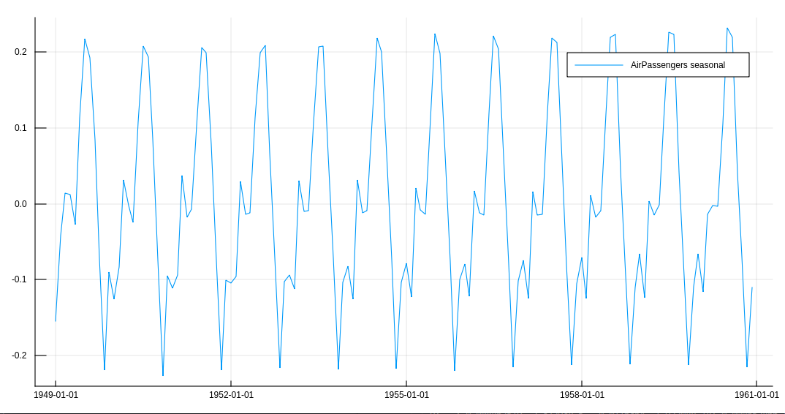
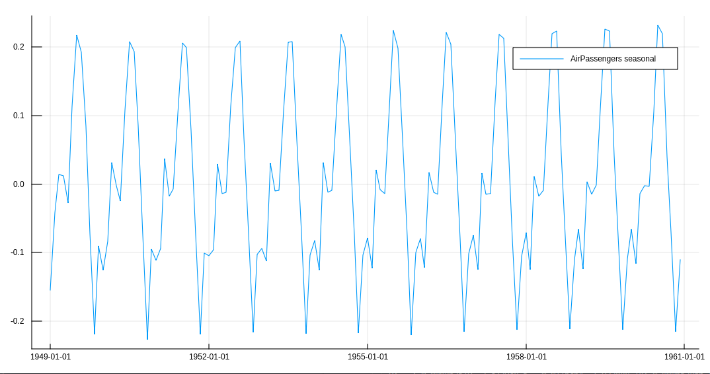

Manual
Introduction
In this package we consider the following state space model
where
Data Structures
StateSpaceDimensionsStateSpaceModel dimensions, following the notation of on the book "Time Series Analysis by State Space Methods" (2012) by J. Durbin and S. J. Koopman.
nis the number of observationspis the dimension of the observation vector $y_t$mis the dimension of the state vector $\alpha_t$ris the dimension of the state covariance matrix $Q_t$
StateSpaceModels.StateSpaceModel — Type.StateSpaceModelFollowing the notation of on the book "Time Series Analysis by State Space Methods" (2012) by J. Durbin and S. J. Koopman.
yA $n \times p$ matrix containing observationsZA $p \times m \times n$ matrixTA $m \times m$ matrixRA $m \times r$ matrix
A StateSpaceModel object can be defined using StateSpaceModel(y::Matrix{Float64}, Z::Array{Float64, 3}, T::Matrix{Float64}, R::Matrix{Float64}).
Alternatively, if Z is time-invariant, it can be input as a single $p \times m$ matrix.
Missing docstring for StateSpaceParameters. Check Documenter's build log for details.
StateSpaceModels.SmoothedState — Type.SmoothedStateFollowing the notation of on the book "Time Series Analysis by State Space Methods" (2012) by J. Durbin and S. J. Koopman.
alphaExpected value of the smoothed state $E(\alpha_t|y_1, \dots , y_n)$VError covariance matrix of smoothed state $Var(\alpha_t|y_1, \dots , y_n)$
Missing docstring for FilterOutput. Check Documenter's build log for details.
StateSpaceModels.StateSpace — Type.StateSpaceStateSpaceModel
Default models
The local level model is defined by
Missing docstring for locallevelmodel. Check Documenter's build log for details.
The linear trend model is defined by
Missing docstring for lineartrendmodel. Check Documenter's build log for details.
The structural model is defined by
TODO mathematical model
Missing docstring for structuralmodel. Check Documenter's build log for details.
Estimation
The model estimation is made using the function statespace(y, s; X, nseeds). It receives as argument the time series y and the desired seasonality s. The user can input exogenous variables using optional argument X and specify the desired number of random seeds nseeds to perform the estimation.
ss = statespace(y, s; X = X, nseeds = nseeds)Simulation
Simulation is made using the function simulate. It receives as argument a StateSpace object, the number of steps ahead N and the number of scenarios to simulate S.
simulation = simulate(ss, N, S)Example
Let's take the Air Passenger time series to build and example. Taking the log of the series we should have a nice time series to simulate. The code is in the example folder.
using CSV, StateSpaceModels, Plots, Statistics, Dates
#load the AirPassengers dataset
AP = CSV.read("AirPassengers.csv")
#Take the log of the series
logAP = log.(Array{Float64}(AP[:Passengers]))
p1 = plot(AP[:Date], logAP, label = "AirPassengers timeseries", size = (1000, 500))
Estimating a StateSpaceModel gives us the trend and seasonal components of the time series.
#Define its seasonality
s = 12
#Estimate a StateSpace Structure
ss = statespace(logAP, s)
#Analyze its decomposition in seasonal and trend
p2 = plot(AP[:Date], ss.state.seasonal, label = "AirPassengers seasonal", size = (1000, 500))
p3 = plot(AP[:Date], ss.state.trend, label = "AirPassengers trend", size = (1000, 500)) 

We can also simulate future scenarios for this time series. In this example, we simulate 100 scenarios up to five years (60 observations) ahead.
#Simulate 100 scenarios, 60 steps ahead
num_scenarios = 100
num_steps_ahead = 60
simulation = simulate(ss, num_steps_ahead, num_scenarios)
#Define simulation dates
firstdate = AP[:Date][end] + Month(1)
newdates = collect(firstdate:Month(1):firstdate + Month(num_steps_ahead - 1))
#Evaluating the mean of the forecast and its quantiles
simulation_mean = mean(simulation, dims = 3)[1, :, :]
n = length(logAP)
nmonths = length(simulation[1, :, 1])
simulation_q05 = zeros(nmonths)
simulation_q95 = zeros(nmonths)
for t = 1:nmonths
simulation_q05[t] = quantile(simulation[1, t, :], 0.05)
simulation_q95[t] = quantile(simulation[1, t, :], 0.95)
end
plot!(p1, newdates, [simulation_q05, simulation_mean, simulation_q95], labels = ["5% quantile", "mean", "95% quantile"])
Reference
Base.size — Function.size(model::StateSpaceModel)Return the dimensions n, p, m and r of the StateSpaceModel
StateSpaceModels.ztr — Function.ztr(model::StateSpaceModel)Return the state space model arrays Z, T and R of the StateSpaceModel